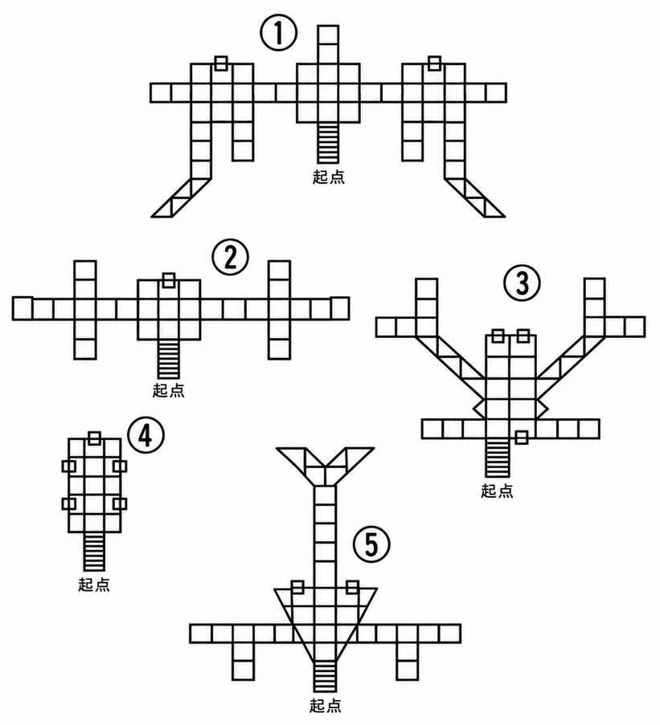
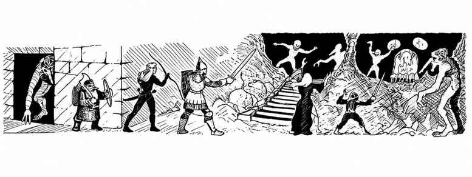

随机地下城起始区域 · Start Areas for Random Dungeon
下图展示五种地下城起始区域；从图示楼梯处开始向下绘制。

表 I：周期检查（d20）Table I: Periodic Check (d20)
| 骰值 | 结果 |
|---|---|
| 1–2 | 继续直行；前进 60'后重新掷本表 |
| 3–5 | 遇到门（见表 II） |
| 6–10 | 侧向通道（见表 III）；前进 30'后重新掷本表 |
| 11–13 | 通道转向（见表 IV；通道宽度掷表 III）；转向后前进 30'再掷本表 |
| 14–16 | 房间（见表 V）；离开房间 30'后重新掷本表 |
| 17 | 楼梯（见表 VI） |
| 18 | 死路（可检查左、右与前方墙壁是否有密门，见表 V.D 注） |
| 19 | 机关／陷阱（见表 VII）；通道继续延伸，前进 30'后重新掷本表 |
| 20 | 游荡怪物；立即重新掷本表，以确定前方情况并判断怪物从哪个方向接近 |
表 II：门*（d20）Table II: Doors (d20)
| 骰值 | 门的位置 | 骰值 | 门后空间 |
|---|---|---|---|
| 1–6 | 左侧 | 1–4 | 平行通道；若门正对前方，则为 10' × 10'**房间 |
| 7–12 | 右侧 | 5–8 | 通道直行 |
| 13–20 | 前方 | 9 | 通道向前／后偏转 45°* ** |
| 10 | 通道向后／前偏转 45°* ** | ||
| 11–18 | 房间（转至表 V） | ||
| 19–20 | 大厅（转至表 V） |
始终检查通道宽度（表 III.A）。
\* 除非门正对前方，否则立即重新掷表 I；若结果不再出现另一扇门，则忽略该结果，并在门后 30'处重新掷表 I。门后若是房间或大厅，则转至表 V。
\ 向两个方向各延伸 30'**。
\*** 转向应符合当前地形；斜线前的方向优先于斜线后的方向。
表 III：侧向通道（d20）Table III: Side Passages (d20)
| 骰值 | 结果 |
|---|---|
| 1–2 | 向左转 90° |
| 3–4 | 向右转 90° |
| 5 | 向左前方转 45° |
| 6 | 向右前方转 45° |
| 7 | 向左后方转 45°（即向左转 135°） |
| 8 | 向右后方转 45°（即向右转 135°） |
| 9 | 向左前方弯曲 45° |
| 10 | 向右前方弯曲 45° |
| 11–13 | 丁字形通道交叉口 |
| 14–15 | Y 字形通道交叉口 |
| 16–19 | 十字形交叉口 |
| 20 | X 形交叉口；若原通道为水平或垂直方向，则会多出第五条通道接入 X 形交叉口 |
表 III.A：通道宽度（d20）Table III.A: Passage Width (d20)
| 骰值 | 通道宽度 |
|---|---|
| 1–12 | 10' |
| 13–16 | 20' |
| 17 | 30' |
| 18 | 5' |
| 19–20 | 特殊通道（见下表 III.B） |
表 III.B：特殊通道（d20）Table III.B: Special Passage (d20)
| 骰值 | 结果 |
|---|---|
| 1–4 | 长 40'，中央排列柱子 |
| 5–7 | 长 40'，两排柱子 |
| 8–10 | 长 50'，两排柱子 |
| 11–12 | 长 50'，左右各由柱子支撑一座宽 10'、高出 20'的上层回廊* |
| 13–15 | 长 10'的溪流** |
| 16–17 | 长 20'的河流*** |
| 18 | 长 40'的河流*** |
| 19 | 长 60'的河流*** |
| 20 | 长 20'的深渊**** |
\* 通往回廊的楼梯位于通道尽头（掷 1–15）或起点（掷 16–20）。若通道中或邻近处已出现楼梯，则有 50% 概率取代尽头楼梯（掷 1–10），另有 50% 概率增设楼梯（掷 11–20）。
\ 溪流横穿通道；有 75% 概率架有桥梁，25%** 概率构成障碍。
\* 河流横穿通道；有 50% 概率架有桥梁，25% 概率有船（船在两岸任一侧的概率相同），另有 25%** 概率构成障碍。
\** 深渊横穿通道，深 150'–200'；有 50% 概率架有桥梁，25% 概率有一处宽 5'–10'的跳跃点，另有 25%** 概率构成障碍。
表 IV：转向（d20）Table IV: Turns (d20)
转向后，按表 III.A 检查通道宽度。
| 骰值 | 结果 |
|---|---|
| 1–8 | 向左转 90° |
| 9 | 向左前方转 45° |
| 10 | 向左后方转 45°（即向左转 135°） |
| 11–18 | 向右转 90° |
| 19 | 向右前方转 45° |
| 20 | 向右后方转 45°（即向右转 135°） |
表 V：大厅与房间的形状及大小（d20）Table V: Chamber and Room Shape and Size (d20)
依次掷骰决定形状、大小和出口；随后决定内部内容、财宝，以及适用时财宝的藏放方式。
| 骰值 | 大厅形状与面积 | 房间形状与面积 |
|---|---|---|
| 1–2 | 正方形，20' × 20' | 正方形，10' × 10' |
| 3–4 | 正方形，20' × 20' | 正方形，20' × 20' |
| 5–6 | 正方形，30' × 30' | 正方形，30' × 30' |
| 7–8 | 正方形，40' × 40' | 正方形，40' × 40' |
| 9–10 | 长方形，20' × 30' | 长方形，10' × 20' |
| 11–13 | 长方形，20' × 30' | 长方形，20' × 30' |
| 14–15 | 长方形，30' × 50' | 长方形，20' × 40' |
| 16–17 | 长方形，40' × 60' | 长方形，30' × 40' |
| 18–20 | 特殊形状与大小，见下表 | 特殊形状与大小，见下表 |
表 V.A：特殊形状（另掷骰决定大小，d20）Table V.A: Unusual Shape (Roll Separately for Size) (d20)
| 骰值 | 形状 |
|---|---|
| 1–5 | 圆形* |
| 6–8 | 三角形 |
| 9–11 | 梯形 |
| 12–13 | 不规则形状** |
| 14–15 | 椭圆形 |
| 16–17 | 六边形 |
| 18–19 | 八边形 |
| 20 | 洞穴 |
\* 再掷：1–5有水池（适用时见表 VIII.A 与 VIII.C），6–7有水井，8–10有竖井，11–20为普通房间。
\** 可自行绘制想要的形状，或绘制适合地图的形状；若愿意，也可采用特殊形状。
表 V.B：特殊面积（d20）Table V.B: Unusual Size (d20)
| 骰值 | 面积 |
|---|---|
| 1–3 | 约 500 平方尺 |
| 4–6 | 约 900 平方尺 |
| 7–8 | 约 1,300 平方尺 |
| 9–10 | 约 2,000 平方尺 |
| 11–12 | 约 2,700 平方尺 |
| 13–14 | 约 3,400 平方尺 |
| 15–20 | 重新掷骰，并将结果加到上方 9–10 的面积上；若再次掷出 15–20，重复此过程，并将 9–10 的面积加倍，依此类推 |
表 V.C：出口数量（d20）Table V.C: Number of Exits (d20)
| 骰值 | 房间面积 | 出口数量 |
|---|---|---|
| 1–3 | 不超过 600 平方尺 | 1 |
| 1–3 | 超过 600 平方尺 | 2 |
| 4–6 | 不超过 600 平方尺 | 2 |
| 4–6 | 超过 600 平方尺 | 3 |
| 7–9 | 不超过 600 平方尺 | 3 |
| 7–9 | 超过 600 平方尺 | 4 |
| 10–12 | 不超过 1,200 平方尺 | 0* |
| 10–12 | 超过 1,200 平方尺 | 1 |
| 13–15 | 不超过 1,600 平方尺 | 0* |
| 13–15 | 超过 1,600 平方尺 | 1 |
| 16–18 | 任意面积 | 1–4（d4） |
| 19–20 | 任意面积 | 大厅有 1 扇门，房间有 1 条通道 |
\* 每隔 10'检查一次密门（见表 V.D 注）。
表 V.D：出口位置*（d20）Table V.D: Exit Location (d20)
| 骰值 | 位置 |
|---|---|
| 1–7 | 对面墙 |
| 8–12 | 左侧墙 |
| 13–17 | 右侧墙 |
| 18–20 | 同一面墙 |
\* 若墙上出现通道或门，而墙外紧邻空间已绘制，则出口为密门（掷 1–5）、单向门（掷 6–10），或位于相反方向（掷 11–20）。
表 V.E：出口方向（d20）Table V.E: Exit Direction (d20)
若出口是门，改用表 II；另按表 III.A 检查通道宽度。
| 骰值 | 方向 |
|---|---|
| 1–16 | 正前方 |
| 17–18 | 向左／右偏转 45°* |
| 19–20 | 向右／左偏转 45°* |
\* 出口方向应符合当前地形；斜线前的方向优先于斜线后的方向。
表 V.F：大厅或房间的内容（d20）Table V.F: Chamber or Room Contents (d20)
| 骰值 | 内容 |
|---|---|
| 1–12 | 空置 |
| 13–14 | 只有怪物（从附录 C“随机怪物遭遇”的地下城遭遇矩阵中掷骰） |
| 15–17 | 怪物与财宝（见下方表 V.G） |
| 18 | 特殊内容*；或有通往其他层的楼梯：1–5 向上 1 层，7–8 向上 2 层，9–14 向下 1 层，15–19 向下 2 层，20 向下 3 层——经过两段楼梯及一条倾斜通道 |
| 19 | 机关／陷阱（见表 VII） |
| 20 | 财宝（见表 V.G） |
\* 由地下城主根据本层平衡决定，或按需要放置；否则依表中指示放置楼梯。
表 V.G：财宝*（d%）Table V.G: Treasure (d%)
| 骰值 | 无怪物守卫 | 有怪物守卫 |
|---|---|---|
| 01–25 | 每层 1,000 枚铜币 | 在左列掷骰 2 次，并将每次结果总额增加 10% |
| 26–50 | 每层 1,000 枚银币 | 同左 |
| 51–65 | 每层 750 枚琥珀币 | 同左 |
| 66–80 | 每层 250 枚金币 | 同左 |
| 81–90 | 每层 100 枚铂金币 | 同左 |
| 91–94 | 每层 1–4 颗宝石 | 同左 |
| 95–97 | 每层 1 件珠宝 | 同左 |
| 98–00 | 魔法物品（在魔法物品表掷 1 次） | 同左 |
另见表 V.H，以及表 V.I 或 V.J。
表 V.H：财宝的容器*（d20）Table V.H: Treasure Is Contained In (d20)
| 骰值 | 容器 |
|---|---|
| 1–2 | 袋子 |
| 3–4 | 麻袋 |
| 5–6 | 小箱 |
| 7–8 | 箱子 |
| 9–10 | 大箱 |
| 11–12 | 陶罐 |
| 13–14 | 金属瓮 |
| 15–16 | 石质容器 |
| 17–18 | 铁柜 |
| 19–20 | 散放 |
\* 若要确定防护方式，掷 1–8见表 V.I，掷 9–20见表 V.J。
表 V.I：财宝的守护方式（d20）Table V.I: Treasure Is Guarded By (d20)
| 骰值 | 防护方式 |
|---|---|
| 1–2 | 容器上涂有接触毒药 |
| 3–4 | 财宝上涂有接触毒药 |
| 5–6 | 锁内藏有毒针 |
| 7 | 把手内藏有毒针 |
| 8 | 容器正面射出弹簧飞镖 |
| 9 | 容器顶部向上射出弹簧飞镖 |
| 10 | 容器底部向上射出弹簧飞镖 |
| 11–12 | 容器内有横扫而过的刀刃 |
| 13 | 容器内有毒虫或毒蛇 |
| 14 | 打开容器时释放毒气 |
| 15 | 容器前方的活板门打开 |
| 16 | 容器前方 6'处的活板门打开 |
| 17 | 石块落在容器前方 |
| 18 | 打开容器时，长矛从墙壁射出 |
| 19 | 爆炸符文 |
| 20 | 魔法徽记 |
表 V.J：财宝的隐藏方式（d20）Table V.J: Treasure Is Hidden By/In (d20)
| 骰值 | 隐藏方式 |
|---|---|
| 1–3 | 隐形 |
| 4–5 | 幻象（改变或隐藏其外观） |
| 6 | 容器下方的秘密空间 |
| 7–8 | 容器内的暗格 |
| 9 | 藏在显眼处的普通物品内 |
| 10 | 伪装成其他东西 |
| 11 | 藏在一堆垃圾／粪便下面 |
| 12–13 | 藏在地板松动石块下面 |
| 14–15 | 藏在墙壁松动石块后面 |
| 16–20 | 藏在附近的密室中 |

表 VI：楼梯（d20）Table VI: Stairs (d20)
上下楼梯后，都要重新掷表 I。
| 骰值 | 结果 |
|---|---|
| 1–5 | 向下 1 层* |
| 6 | 向下 2 层 ** |
| 7 | 向下 3 层 *** |
| 8 | 向上 1 层 |
| 9 | 向上后到达死路（有 1/6 概率滑落至下方 2 层） |
| 10 | 向下后到达死路（有 1/6 概率滑落至下方 1 层） |
| 11 | 烟囱状通道向上 1 层，通道继续；前进 30'后重新掷骰 |
| 12 | 烟囱状通道向上 2 层，通道继续；前进 30'后重新掷骰 |
| 13 | 烟囱状通道向下 2 层，通道继续；前进 30'后重新掷骰 |
| 14–16 | 活板门向下 1 层，通道继续；前进 30'后重新掷骰 |
| 17 | 活板门向下 2 层，通道继续；前进 30'后重新掷骰 |
| 18–20 | 先向上 1 层，再向下 2 层（总计向下 1 层）；尽头有一处大厅（掷表 V） |
\* 有 1/20 概率，门会关闭，令出口封闭 1 天。
\ 有 2/20 概率，门会关闭，令出口封闭 1 天**。
\* 有 3/20 概率，门会关闭，令出口封闭 1 天**。
注意：若进行单人游戏，只在走下台阶之后检查这类门。
表 VII：机关／陷阱（d20）Table VII: Trick/Trap (d20)
| 骰值 | 结果 |
|---|---|
| 1–5 | 密门；若未被发现，非精灵发现概率为 3/20，精灵为 5/20，魔法装置为 18/20（发现后按表 II 继续）。未发现的密门改掷下方 6–7。 |
| 6–7 | 深 10'的坑，有 3/6 概率坠入。 |
| 8 | 深 10'、布满尖刺的坑，有 3/6 概率坠入。 |
| 9 | 20' × 20'升降室（队伍通过正前方的门进入房间）；下降 1 层，且 30 回合内不会上升。 |
| 10 | 同 9，但房间下降 2 层。 |
| 11 | 同 9，但房间下降 2–5 层：进入时下降 1 层，此后每次开门失败再下降 1 层，直至达到可下降的最深处；60 回合内不会上升。 |
| 12 | 身后 10'处的墙壁滑过通道并将其封住，持续 40–60 回合。 |
| 13 | 一瓶油从天花板孔洞洒向随机一人，随后落下一块燃烧的煤块；若未通过对抗魔法的豁免检定，受到 2–12 点伤害；若成功，则受到 1–3 点伤害。 |
| 14 | 深 10'的坑，有 3/6 概率坠入；坑壁会向内合拢，并在 2–5 轮内压碎受害者。 |
| 15 | 箭矢陷阱，射出 1–3 支箭；其中 1/20 概率带毒。 |
| 16 | 长矛陷阱，射出 1–3 支长矛；其中 1/20 概率带毒。 |
| 17 | 毒气；队伍已发现毒气，但要继续通过通道就必须吸入。毒气覆盖前方 60'，无论是否折返都应在地图上标记；见下方表 VII.A。 |
| 18 | 门向外倒下，造成 1–10 点伤害；或天花板石块坠落，未通过对抗石化的豁免检定者受到 2–20 点伤害。 |
| 19 | 幻象墙隐藏着：上方的坑（掷 1–6）、下方的滑道（掷 7–10），或有怪物与财宝的房间（掷 11–20；见表 V）。 |
| 20 | 滑道通往下方 1 层，无法以任何方式向上攀回。 |
表 VII.A：毒气子表（d20）Table VII.A: Gas Sub-Table (d20)
| 骰值 | 效果 |
|---|---|
| 1–7 | 通过时只会遮蔽视线。 |
| 8–9 | 通过后目盲 1–6 回合。 |
| 10–12 | 恐惧：若未通过对抗魔法的豁免检定，向后逃跑 120'。 |
| 13 | 睡眠：全队沉睡 2–12 回合，如同“睡眠术”。 |
| 14–18 | 力量：队伍中的所有战士力量增加 1–6 点，如同“力量术”，持续 1–10 小时。 |
| 19 | 疾病：立即返回地表。 |
| 20 | 毒药：若未通过对抗毒素的豁免检定，角色死亡。 |
上一节：附录 A：随机地下城生成 · Appendix A: Random Dungeon Generation
下一节：最低层的洞穴与天然洞窟 · Caves and Caverns for Lowest Levels